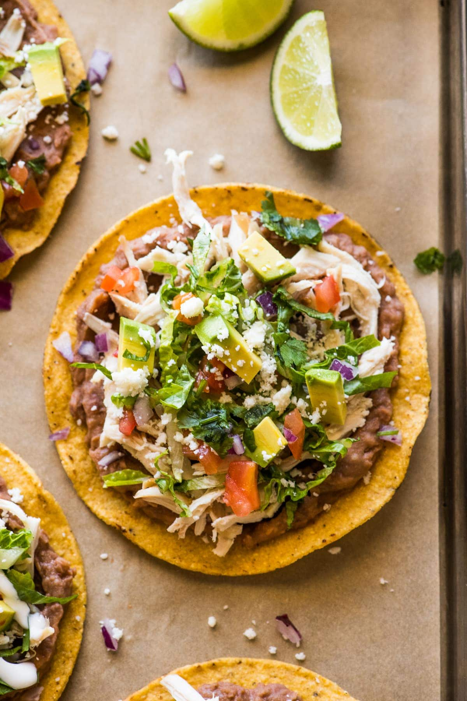

Tostada

Description
This recipe is super easy to follow few things
are needed to get it started, you can also add
or leave out which ever toppings you like.
Ingredients
- Corn tostada
- Pastor meat
- Queso Fresco
- Avocado
- Salsa
- Add meat to Tostada
- Add queso fresco/li>
- Add avocado
- Add salsa (optional)